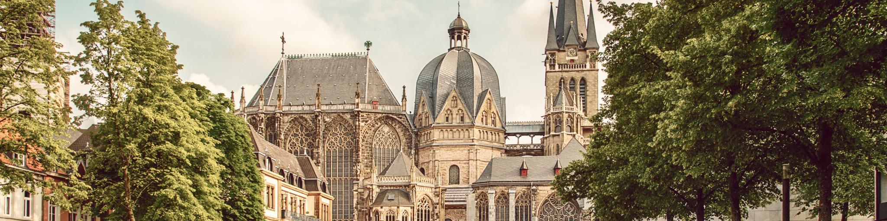
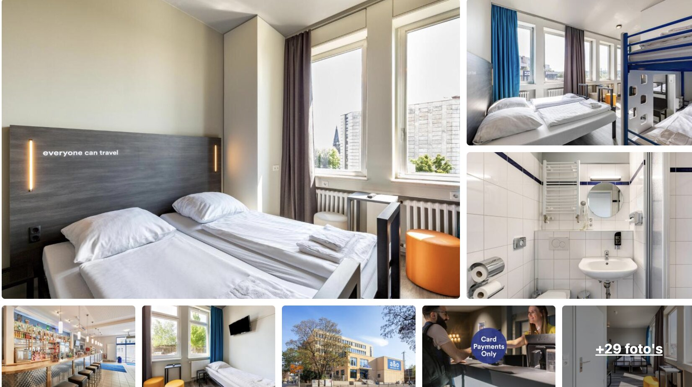
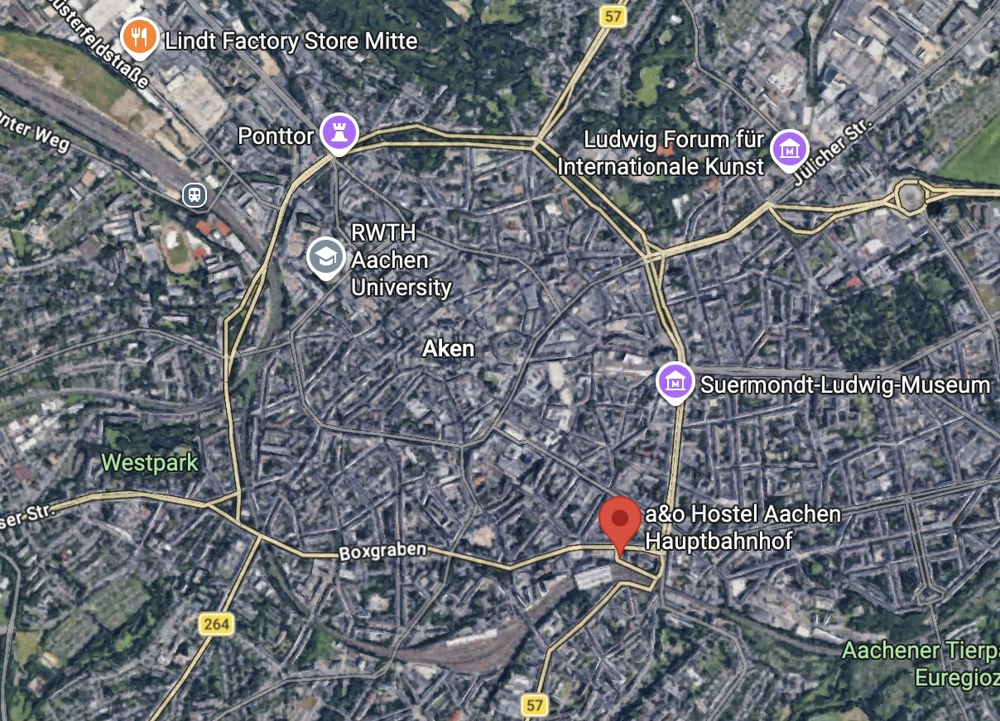

Race
Spa-Francorchamps in beeld
Het raceweekend is officieel bevestigd voor 17, 18 en 19 juli 2026. De race zelf is op zondag 19 juli 2026.
Cadeau voor papa
Voor je verjaardag gaan we samen naar de Formula 1 Moet & Chandon Belgian Grand Prix 2026 op Spa-Francorchamps, met een verblijf in Aken als ontspannen uitvalsbasis voor het weekend.

De stad waar we overnachten en van waaruit we samen het raceweekend beleven.
Het plan
Het raceweekend is officieel bevestigd voor 17, 18 en 19 juli 2026. De race zelf is op zondag 19 juli 2026.

Gelegen aan Hackländerstraße 5, vlak bij station. Praktisch, centraal en zonder gedoe.

De ligging van het hotel in Aken: dicht bij het centrum, dus handig voor aankomst en verblijf.
Circuit
Locatie
Weekendindeling
Inchecken in Aken, de eerste F1-sessies volgen en daarna samen de stad in voor een avond in Aken.
Kwalificatie, racespanning en daarna opnieuw Aken in om samen te kijken wat er daar te beleven valt.
Het hoogtepunt van het cadeau: samen de Grand Prix beleven op Spa.
Praktisch